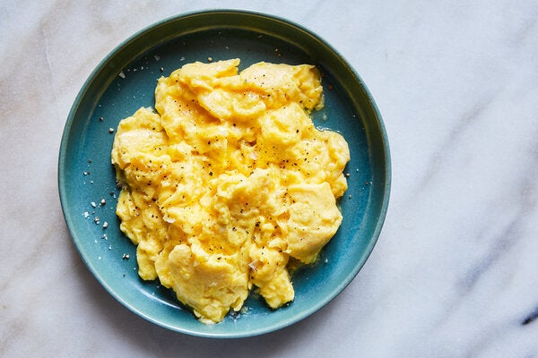

Scrambled Eggs

What You Will Be Eating
Scrambled eggs is a dish of eggs prepared by beating them and then cooking gently. They are sometimes combined with butter, cream, or cheese and cooked over low to medium heat.
Ingredients
- 4 large eggs
- 1/4 cup half-n-half
- 1/4 teaspoon Kosher salt
- 1 tablespoon unsalted butter
- black pepper, for serving
- fresh chopped herbs, for serving
Cooking Steps
- In a medium mixing bowl, aggressively whisk together the eggs, half-n-half, and salt until the mixture is uniform in color and texture, and is light and foamy, without any separate streaks of yolk or whites.
- Melt the butter in a small nonstick pan over medium heat, until the butter coats the whole pan and just starts to foam.
- Add the eggs to the center of the pan and immediately reduce the heat to medium-low.
- Wait for the edges to just barely start to set, then using a rubber spatula, gently push the eggs from one end of the pan to the other. Continue this process, pausing in between swipes to allow the uncooked egg to settle on the warm pan and cook, gently pushing the liquid to form the curds.
- When the eggs are mostly cooked, with big pillow-y folds, but still look pretty wet, slowly fold the eggs into itself just a couple times, bringing them together.
- Remove from the heat when the eggs still shimmer with some moisture.
- Transfer to serving plates. Finish with some freshly cracked pepper and chopped fresh herbs. Scrambled eggs have never tasted so good!
Return Home